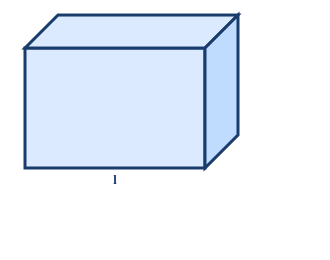

小明嘅屋企要搬家，搬屋公司嘅叔叔話貨車空間有限。爸爸話：「每個箱嘅體積都唔同！」
小明好奇：「面積同體積有咩分別呀？」爸爸解釋：「面積係平面嘅（地板），體積係立體嘅（成個空間）！」
💡 今日我哋學識咩係體積，同埋點樣計算長方體同正方體嘅體積！
小明嘅屋企要搬家，搬屋公司嘅叔叔話貨車空間有限。爸爸話：「每個箱嘅體積都唔同！」
小明好奇：「面積同體積有咩分別呀？」爸爸解釋：「面積係平面嘅（地板），體積係立體嘅（成個空間）！」
💡 今日我哋學識咩係體積，同埋點樣計算長方體同正方體嘅體積！
| # | 題目 | 難度 | 作答區（寫出完整計算過程） |
|---|---|---|---|
| 1 | 長方形長 8 cm、闊 5 cm，面積 = ？單位是甚麼？ | 🌱 基礎 | |
| 2 | 1 m = ？cm；1 m² = ？cm² | 🌱 基礎 | |
| 3 | 計算 12 × 5 × 3 = ？ | 🌱 基礎 | |
| 4 | 計算 7³ = ？（即 7×7×7） | 🌿 進階 | |
| 5 | 一個正方體有幾個面？每個面是甚麼形狀？ | 🌱 基礎 |
| # | 題目 | 難度 | 作答區 |
|---|---|---|---|
| 例1 | 數一數：下圖由多少個 1 cm³ 小正方體組成？（圖：2×3×2 長方體） | 🌱 | |
| 例2 | 2 m³ = ？cm³（寫出換算步驟） | 🌿 | |
| 例3 | 3,000,000 cm³ = ？m³ | 🌿 |
| # | 題目 | 難度 | 作答區 |
|---|---|---|---|
| 6 | 邊長 1 cm 的正方體，體積 = ？單位是甚麼？ | 🌱 | |
| 7 | 1.5 m³ = ？cm³ | 🌿 | |
| 8 | 500,000 cm³ = ？m³（以小數作答） | 🌿 |
| # | 題目 | 難度 | 作答區 |
|---|---|---|---|
| 例4 | 長方體長 10 cm、闊 6 cm、高 4 cm。體積 = ？ | 🌱 | |
| 例5 | 長方體長 1.5 m、闊 0.8 m、高 0.5 m。體積 = ？m³ | 🌿 | |
| 例6 | 長方體體積 240 cm³，長 10 cm，闊 6 cm。高 = ？ | 🌳 |
| # | 題目 | 難度 | 作答區 |
|---|---|---|---|
| 9 | 長方體 12×5×8 cm。體積 = ？ | 🌱 | |
| 10 | 長方體 3 m × 2 m × 1.5 m。體積 = ？m³ | 🌱 | |
| 11 | 長方體長 1 m、闊 40 cm、高 25 cm。體積 = ？cm³ | 🌿 | |
| 12 | 長方體體積 360 cm³，長 12 cm，高 5 cm。闊 = ？ | 🌿 | |
| 13 | 長方體長 80 cm、闊 0.5 m、高 40 cm。體積 = ？m³（以小數作答） | 🌳 |
| # | 題目 | 難度 | 作答區 |
|---|---|---|---|
| 例7 | 正方體邊長 9 cm，體積 = ？ | 🌱 | |
| 例8 | 正方體體積 216 cm³，邊長 = ？ | 🌳 | |
| 14 | 正方體邊長 7 cm。體積 = ？ | 🌱 | |
| 15 | 正方體邊長 0.5 m。體積 = ？m³ | 🌿 | |
| 16 | 正方體體積 125 cm³。邊長 = ？ | 🌳 | |
| 17 | 正方體邊長 15 cm。體積 = ？cm³；合多少 m³？ | 🌳 |
| # | 題目 | 難度 | 作答區 |
|---|---|---|---|
| 18 | 長方體 10×6×4 cm。(a) 體積 = ？(b) 表面面積 = ？ | 🌿 | |
| 19 | 正方體邊長 5 cm。(a) 體積 = ？(b) 表面面積 = ？ | 🌱 | |
| 20 | 長方體 12×8×6 cm。表面面積 = ？ | 🌿 |

| # | 題目 | 難度 | 作答區 |
|---|---|---|---|
| 21 | 長方體 8×4×3 cm。體積 = ？ | 🌱 | |
| 22 | 正方體邊長 6 cm。體積 = ？ | 🌱 | |
| 23 | 長方體 5×5×10 cm。(a) 體積 = ？(b) 表面面積 = ？ | 🌱 | |
| 24 | 正方體邊長 8 cm。體積 = ？表面面積 = ？ | 🌿 | |
| 25 | 2.5 m³ = ？cm³ | 🌿 |
| # | 題目 | 難度 | 作答區 |
|---|---|---|---|
| 26 | 長方體長 2 m、闊 1.2 m、高 80 cm。體積 = ？m³ | 🌿 | |
| 27 | 長方體體積 480 cm³，長 10 cm，闊 8 cm。高 = ？表面面積 = ？ | 🌳 | |
| 28 | 正方體的表面面積是 150 cm²。邊長 = ？體積 = ？ | 🌳 | |
| 29 | 比較：A（長方體 10×6×4 cm）和 B（正方體邊長 6 cm）。哪個體積較大？大多少？ | 🌳 | |
| 30 | 長方體長 1.5 m、闊 0.8 m、高 60 cm。表面面積 = ？m² | 🌳 |
| # | 題目 | 難度 | 作答區 |
|---|---|---|---|
| 31 | 正方體邊長是某長方體的高的 2 倍。長方體 10×8×6 cm。正方體體積比長方體體積大多少？ | 🌳 | |
| 32 | 一個長方體水箱內部尺寸為 80 cm × 50 cm × 60 cm。(a) 水箱最多可盛水多少 cm³？合多少 m³？(b) 水箱的內表面面積 = ？（不計上面） | 🌳 | |
| 33 | 把 8 個邊長 3 cm 的正方體拼成一個大正方體。(a) 大正方體的邊長 = ？(b) 大正方體的體積 = ？(c) 大正方體的 SA 比 8 個小正方體總 SA 少多少？ | 🏔 |
| # | 題目 | 難度 | 作答區（列式 → 計算 → 答句） |
|---|---|---|---|
| 34 | 一個長方體魚缸長 60 cm、闊 30 cm、高 40 cm。魚缸的體積是多少 cm³？合多少 m³？ | 🌱 | |
| 35 | 一個正方體禮品盒邊長 15 cm。要用花紙包裝禮盒的所有面（不重疊），最少需要花紙多少 cm²？ | 🌿 | |
| 36 | 一個長方體貨櫃內部長 6 m、闊 2.5 m、高 2.4 m。貨櫃內可放多少個邊長 1 m 的正方體貨物？ | 🌿 | |
| 37 | 長方體水池長 8 m、闊 5 m、深 1.5 m。水池四壁和底部要鋪磁磚（不鋪頂部）。鋪磁磚的總面積是多少 m²？ | 🌳 | |
| 38 | 一個正方體積木邊長 10 cm。把它切成 8 個相同大小的小正方體。(a) 每個小正方體的邊長 = ？(b) 每個小正方體的體積 = ？ | 🌳 | |
| 39 | 長方體房間長 5 m、闊 4 m、高 3 m。(a) 房間的體積 = ？m³ (b) 四面牆壁和天花板的總表面面積 = ？m²（不計地板） | 🌳 |
| # | 題目 | 難度 | 作答區 |
|---|---|---|---|
| 🏔1 | 一個正方體的體積是 512 cm³。(a) 邊長 = ？(b) 表面面積 = ？(c) 如果把這個正方體切成邊長 4 cm 的小正方體，可以切出多少個？ | 🏔 | |
| 🏔2 | 長方體 12×9×8 cm 和正方體邊長 10 cm。(a) 兩者體積相差多少？(b) 兩者表面面積相差多少？(c) 如果把長方體的高增加 2 cm，新體積比正方體大還是小？ | 🏔 | |
| 🏔3 | 一個無蓋的長方體水箱由 1 cm 厚玻璃製成。外部尺寸為 52 cm × 32 cm × 42 cm。(a) 水箱的內部體積（容量）= ？(b) 製造這個水箱需要玻璃多少 cm²？（不計上蓋） | 🏔 |
| # | 題目 | 難度 | 作答區 |
|---|---|---|---|
| H1 | 長方體 9×5×4 cm。體積 = ？ | 🌱 | |
| H2 | 正方體邊長 7 cm。體積 = ？表面面積 = ？ | 🌱 | |
| H3 | 長方體 12×8×10 cm。(a) 體積 = ？(b) 表面面積 = ？ | 🌿 | |
| H4 | 3 m³ = ？cm³（寫出換算步驟） | 🌿 | |
| H5 | 長方體體積 360 cm³，長 12 cm，高 5 cm。求闊和表面面積。 | 🌳 |
| # | 題目 | 難度 | 作答區 |
|---|---|---|---|
| H6 | 正方體的表面面積是 294 cm²。邊長 = ？體積 = ？ | 🌳 | |
| H7 | 一個房間長 6 m、闊 4 m、高 3 m。四面牆壁的面積共多少 m²？若要貼牆紙（每卷可貼 5 m²），最少需要多少卷？ | 🌳 |
| # | 易錯點 | 正確做法 |
|---|---|---|
| 1 | a³ 誤當 a×3：邊長 5 cm → V=5×3=15（錯！） | a³ = a×a×a。5³ = 5×5×5 = 125 cm³ |
| 2 | m³ ↔ cm³ 換算錯：1 m³ = 100 cm³（錯！） | 1 m³ = 100×100×100 = 1,000,000 cm³（三次方，乘三次 100） |
| 3 | 不同單位直接相乘：2 m × 50 cm × 30 cm | 先統一單位（全轉 cm 或全轉 m）→ 再計算 |
| 4 | 體積 vs 表面面積混淆：問 SA 答了 V（單位 cm³ vs cm²） | 看清題目問甚麼！V=三維(cm³)；SA=六面總和(cm²) |
| 5 | 正方體 SA 公式錯：SA = a³ 或 SA = 4×a² | 正方體 SA = 6×a²（六個相同的面） |
| 6 | 長方體 SA 漏計某面：只計了 4 個面 | SA = 2(LW + LH + WH)，六個面兩兩相同 |
| 7 | 應用題漏單位：只寫數字，不寫 cm³ / m³，或不寫答句 | 呈分試要求完整答句＋正確單位，否則扣步驟分 |
| # | 題目 | 答案 |
|---|---|---|
| 1 | 長方形長 8 cm、闊 5 cm，面積 = ？單位是甚麼？ | 問老師 |
| 2 | 1 m = ？cm；1 m² = ？cm² | 問老師 |
| 3 | 計算 12 × 5 × 3 = ？ | 問老師 |
| 4 | 計算 7³ = ？（即 7×7×7） | 問老師 |
| 5 | 一個正方體有幾個面？每個面是甚麼形狀？ | 問老師 |
| 41 | 把 8 個邊長 3 cm 的正方體拼成一個大正方體。(a) 大正方體的邊長 = ？(b) 大正方體的體積 = ？(c) 大正方體的 SA 比 8 個小正方體總 | 0 |
| 49 | 長方體 12×9×8 cm 和正方體邊長 10 cm。(a) 兩者體積相差多少？(b) 兩者表面面積相差多少？(c) 如果把長方體的高增加 2 cm，新體積比正 | 3 |
以下題目來自霖楓教研團隊精心設計，每題針對一個常見考試陷阱。做完即知你的陷阱弱項！
本節共有 8 題陷阱題，涵蓋 8 種陷阱類型。